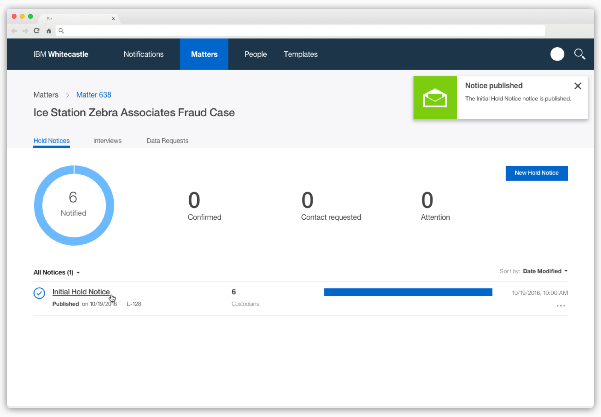
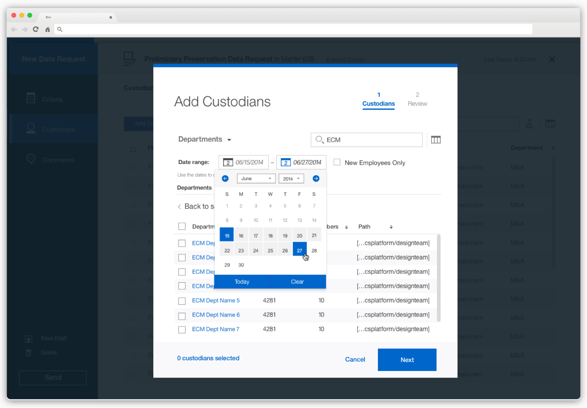
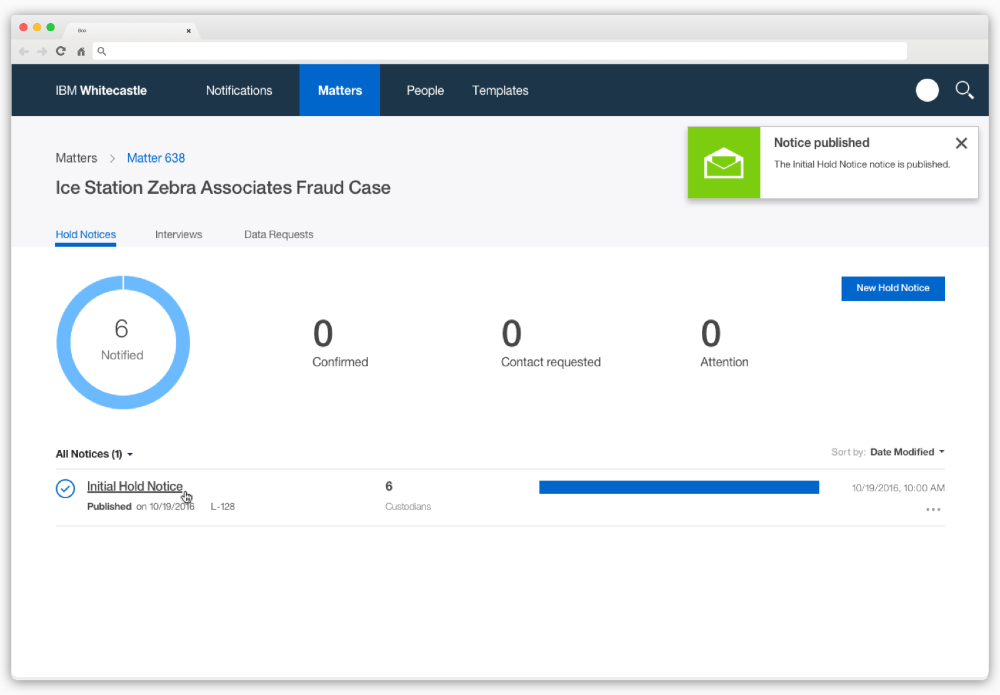
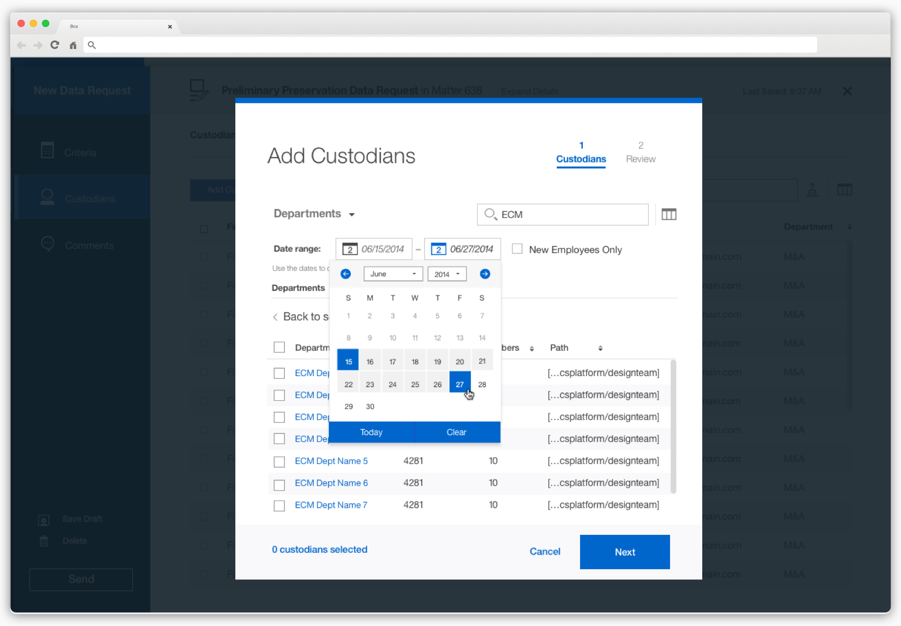

PERSONAS
Our primary users considered when creating user flows and designs
Paige The Paralegal"I'm managing numerous projects at once. There are constant deadlines to keep track of and legal emergencies that require immediate action."
Curtis the Custodian"My responsibilities are both in the office and on the field. Things get busy so I don't always have time to keep up with things outside of my day-to-day."
Athena The Legal Admin/Head (Attorney at Law)"The legal system is meticulous. We need to be careful and make sure everything is done right. There is no room for mistakes."
USER FLOWS
Below are user flows I created for various parts of the product. For example, the "courtesy copy recipient" flow and the "download CSV" flows.


 


